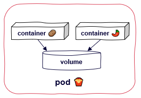
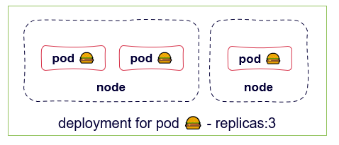
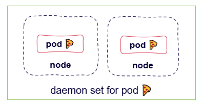
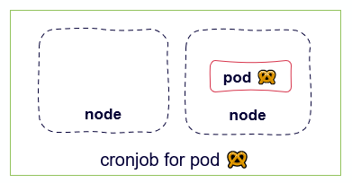
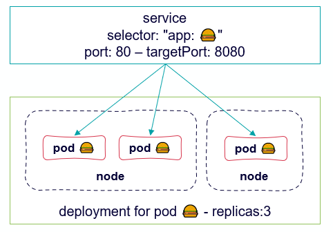
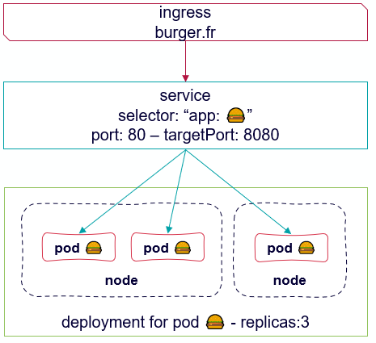

Pod
Pods are the smallest deployable units of computing that you can create and manage in Kubernetes.

apiVersion: v1
kind: Pod
metadata:
name: basic-pod
spec:
containers:
- name: webserver
image: nginx
deployments & replicasets
Deployments manages a replicated application on your cluster.
ReplicaSet ensures that a specified number of Pod replicas are running at one time.

apiVersion: apps/v1
kind: Deployment
metadata:
name: basic-deployment
spec:
replicas: 2
selector:
matchLabels:
app: burger
template:
metadata:
labels:
app: burger
spec:
containers:
- name: webserver
image: nginx
daemonset
DaemonSet ensures that all (or some) Nodes run a copy of a Pod.

apiVersion: apps/v1
kind: DaemonSet
metadata:
name: basic-daemonset
spec:
selector:
matchLabels:
app: pizza
template:
metadata:
labels:
app: pizza
spec:
containers:
- name: webserver
image: nginx
jobs/cronjobs
Job creates one or more Pods and ensures that a specified number of them successfully terminate.
Cronjobs creates Jobs on a repeating schedule.

apiVersion: batch/v1
kind: Job
metadata:
name: bretzel
spec:
template:
spec:
containers:
- name: date
image: alpine
command: ["sh", "-c", "date"]
restartPolicy: Never
networking: services
A Service is an abstract way to expose an application running on a set of Pods as a network service.

apiVersion: v1
kind: Service
metadata:
name: burger-service
spec:
selector:
app: burger
ports:
- protocol: TCP
port: 80
targetPort: 8080
networking: ingress
Ingress exposes HTTP and HTTPS routes from outside the cluster to Services within the cluster.

apiVersion: networking.k8s.io/v1
kind: Ingress
metadata:
name: ingress-burger
annotations:
kubernetes.io/ingress.class: traefik
spec:
rules:
- host: burger.fr.172.16.134.57.nip.io
http:
paths:
- path: /
pathType: Prefix
backend:
service:
name: burger-service
port:
number: 80